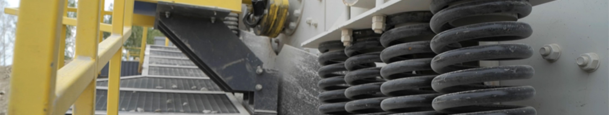
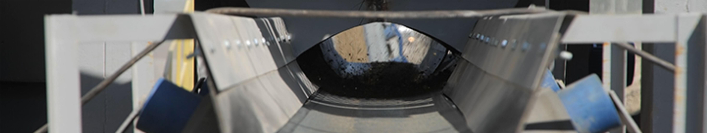

<!--#set var="title" value="Инжиринг" -->
<!--#include virtual="/parts/header-inner.html" -->

<div class="page-wrapper">
    <div class="container">
        <div class="page-menu-navigation-wrapper active">
            <nav class="page-menu-navigation">
                <ul class="page-menu">
                    <li class="page-menu-item active">       
                        <div class="page-menu-item__hover"></div>        
                        <a href="#" class="page-menu-item__link">ИНЖИНИРИНГ</a>
                    </li>
                    <li class="page-menu-item">
                        <div class="page-menu-item__hover"></div>  
                        <a href="#" class="page-menu-item__link">ГЕОГРАФИЯ ПОСТАВОК</a>
                    </li>
                    <li class="page-menu-item">
                        <div class="page-menu-item__hover"></div>  
                        <a href="#" class="page-menu-item__link">НАС РЕКОМЕНДУЮТ</a>
                    </li>
                    <li class="page-menu-item">
                        <div class="page-menu-item__hover"></div>  
                        <a href="#" class="page-menu-item__link">СЕРТИФИКАТЫ</a>
                    </li>
                    <li class="page-menu-item">
                        <div class="page-menu-item__hover"></div>  
                        <a href="#" class="page-menu-item__link">ДОКУМЕНТАЦИЯ</a>
                    </li>
                </ul>
            </nav>
        </div>

        <div class="page-content">
            <div class="page-content-container">
                <h2>
                    ИНЖИНИРИНГ И ПРОИЗВОДСТВО НЕСТАНДАРТНОГО ОБОРУДОВАНИЯ
                </h2>
        
                <ul>
                    <li>- объекты производственного назначения;</li>
                    <li>- нестандартное оборудование;</li>
                    <li>- стальные конструкции различной сложности и назначения;</li>
                    <li>- различные инженерные системы;</li>
                    <li>- цеха и автоматические линии;</li>
                    <li>- технологическую оснастку любой сложности и назначения;</li>
                    <li>- ангары;</li>
                    <li>- бункеры и резервуары различного назначения;</li>
                    <li>- транспортеры цеховые (ленточные, роликовые, цепные);</li>
                    <li>- тележки для склада и цеха различной грузоподъемности (ручные, с электроприводом, рельсовые, на
                       резиновом колесном ходу);</li>
                    <li>- станочные приспособления (зажимные, поворотные, люнеты);</li>
                    <li>- кондукторы для сварочных и сборочных работ;</li>
                    <li>- грузозахватные приспособления для деталей сложной формы и со смещенным центром тяжести
                    (траверсы, кантователи);</li>
                    <li>- стеллажи;</li>
                    <li>- 3D-моделирование;</li>
                    <li>- разработка конструкторской документации.</li>
                </ul>

                <p>
                    <strong>
                        ПРОЕКТИРОВАНИЕ ОСУЩЕСТВЛЯЕТСЯ ОПЫТНЫМИ СПЕЦИАЛИСТАМИ. Каждый проект – это результат индивидуального подхода специалистов к требованиям заказчика при соблюдении технических норм.
                    </strong>
                </p>
                <p>
                    <strong>
                        ПРИ РАЗРАБОТКЕ ПРОЕКТА ПРОВОДИТСЯ ГРАМОТНЫЙ, ВСЕСТОРОННИЙ АНАЛИЗ, учитываются индивидуальные особенности производства и потребности каждого конкретного Заказчика. На объект Заказчика возможен выезд специалистов.
                    </strong>
                </p>
                <p>
                    <strong>
                        ОСНОВНЫЕ ЭТАПЫ ПРОЕКТИРОВАНИЯ И ИЗГОТОВЛЕНИЯ РАЗЛИЧНЫХ МЕТАЛЛОКОНСТРУКЦИЙ РЕГЛАМЕНТИРОВАНЫ ЕСКД. Процесс создания новой конструкции очень сложен и содержит многие мероприятия для обеспечения этапов проектирования от технического задания до запуска ее в производство.
                    </strong>
                </p>

                <div class="page-content-title">
                    
                    <h3 class="page-content-title__value">
                        Этапы проектирования
                    </h3>
                </div>

                <ol>
                    <li>Получение технического задания. Техническое задание обосновывает целесообразность создания новой конструкции и устанавливает основное назначение и технические характеристики, вид производства, для которого предназначен объект проектирования.</li>

                    <li>Техническое предложение. Предоставляется Заказчику в установленные Заказчиком сроки и содержит совокупность конструкторских документов. Техническое предложение уточняет и развивает техническое задание. На этом этапе разрабатывают кинематическую, гидравлическую и другие схемы объекта проектирования. Рассчитывают габаритные размеры, устанавливаются окончательные технические характеристики. Техническое предложение дает полное представление о внешнем виде и возможностях объекта проектирования.</li>
                    
                    <li>Эскизный проект. Предоставляется Заказчику вместе с техническим предложением и содержит конструктивные решения, дающие общее представление об объекте проектирования, принципе работы механизмов на основании предварительных расчетов и анализа различных вариантов. При разработке конструкций используются стандартные и унифицированные детали, узлы и механизмы.</li>
                    
                    <li>Технический проект. Выполняется в установленные Заказчиком сроки и содержит окончательные технические решения, дающие полное представление об устройстве объекта проектирования. В нем представлены исходные данные для разработки рабочей документации. На этой стадии принимаются и разрабатываются окончательные технические решения, выполняются общие виды и схемы конструкции, производятся необходимые прочностные расчеты.</li>
                    
                    <li>Конструкторская документация (последняя стадия проектирования) включает в себя разработку рабочих чертежей деталей и сборок, технических условий к ним. Содержит все данные, необходимые для изготовления спроектированной конструкции.</li>
                    
                    <li>Изготовление объекта проектирования. </li>
                </ol>

                <p>
                    <strong>
                        Стоимость выполнения этапов проектирования объектов производственного назначения рассчитывается исходя из функционального назначения и сложности конструктивных и инженерных характеристик, а также от объёма работ, выполняемых в процессе исследования объекта проектирования и объема работ по прочностным расчетам и проектированию. Сжатые сроки проектирования могут отразиться на полной стоимости проекта. Так же учитываются иные факторы риска, для оценки используются повышающий и понижающие коэффициенты стоимости.
                    </strong>
                </p>

                <p>
                    ВЫПОЛНЕНИЕ ПРОЕКТА ВХОДИТ В КОМПЛЕКСНОЕ ОКАЗАНИЕ УСЛУГ ПО ОФОРМЛЕНИЮ ПОЛНОГО КОМПЛЕКТА КОНСТРУКТОРСКОЙ ДОКУМЕНТАЦИИ.
                </p>

                <p>
                    ВМЕСТЕ С УСЛУГАМИ ПО ПРОЕКТИРОВАНИЮ, ООО «ДРОБСЕРВИС» ПОДГОТОВИТ ДЛЯ ВАС РУКОВОДСТВО ПО ЭКСПЛУАТАЦИИ И ТЕХНИЧЕСКИХ ПАСПОРТ НА ОБЪЕКТ ПРОЕКТИРОВАНИЯ СОГЛАСНО ДЕЙСТВУЮЩИМ СТАНДАРТАМ.
                </p>

                <p>
                    Нашими конкурентными преимуществами по сравнению с другими организациями являются комплексность оказываемых услуг, а также более короткие сроки реализации заказов при обеспечении неизменно высокого качества их выполнения.
                </p>

                <div class="page-content-title">
                    
                </div>

                <p>Работники ООО «ДРОБсервис» — это творческая команда высококвалифицированных специалистов с огромным опытом работы. У нас работают технологи и конструкторы различных специализаций высокой квалификации. У нашего конструкторского бюро достаточно профессионализма чтобы выполнить Ваш проект, какой бы сложности он ни был!</p>

                <p>В процессе проектирования стальных конструкций используются самые современные технологии. Рабочие места наших специалистов оснащены мощными современными компьютерами. В ходе проектирования используется современное профессиональное программное обеспечение: чертежные и расчетные программы, программы твердотельного моделирования, программы профессионального дизайна и трехмерной визуализации.</p>

                <p>ООО «ДРОБсервис» имеет неограниченные возможности по проектным изысканиям, разработке проектной документации любой сложности в соответствии с требованиями ЕСКД и других нормативных документов, осуществляет авторский надзор проектов, предоставляет лучшие возможности Заказчику для выбора продукции, изготовленной с высокой точностью из качественных материалов, осуществляет услуги по монтажу оборудования, помощь и технические консультации профессионалов в ходе эксплуатации.</p>

                <p>Для оформления заявки на проектирование необходимого Вам оборудования, достаточно связаться с нами по предложенным телефонам или направить на наш электронный адрес письмо с указанием, какой комплект документации требуется разработать или какое оборудование необходимо изготовить. Менеджеры нашей компании ответят на любые интересующие Вас вопросы и помогут грамотно составить задание на проектирование.</p>

                <p>Формат выдачи файлов проекта оговаривается с менеджером на этапе подписания договора. Выдача расчетов, чертежей или 3D-моделей может производиться на каждом этапе проектирования в формате, заранее оговоренном на этапе подписания договора. На данный момент доступно огромное количество форматов для чтения чертежей, другой конструкторской документации и 3D моделирования. Формат выдачи конструкторской документации и 3D-моделей может быть любым из доступных.</p>

                <p>ООО «ДРОБСЕРВИС» ГОТОВ ДОВЕСТИ ВАШИ ИДЕИ ДО КОНКРЕТНОГО РЕШЕНИЯ В ОБЛАСТИ МАШИНОСТРОЕНИЯ, ТЕХНОЛОГИЧЕСКОЙ ОСНАСТКИ, ПРИСПОСОБЛЕНИЙ. ВАШИ ЖЕЛАНИЯ ВОПЛОТИМ В РЕАЛЬНОСТЬ!</p>
            </div>
        </div>
    </div>
</div>

<!--#include virtual="/parts/footer.html" -->
